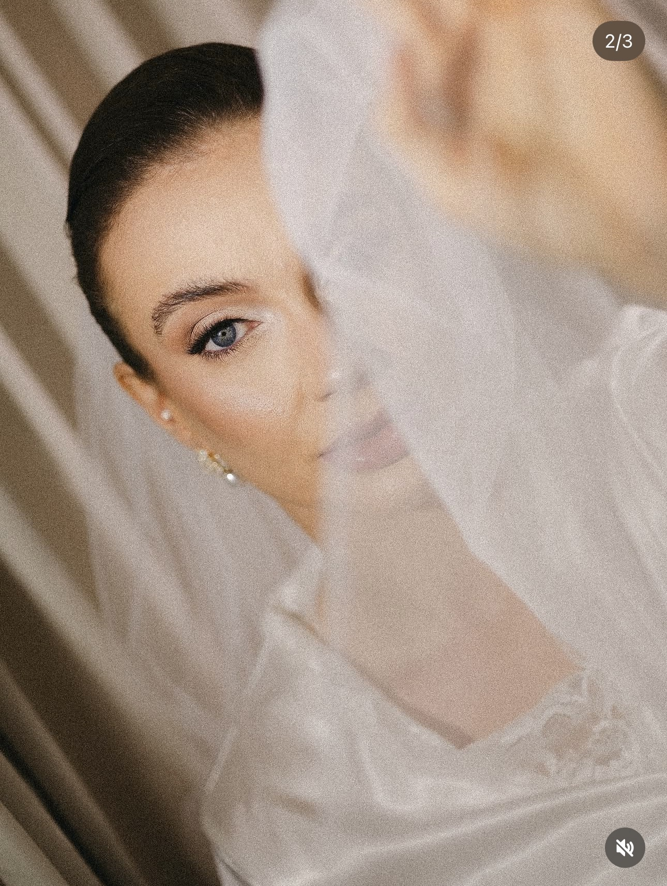
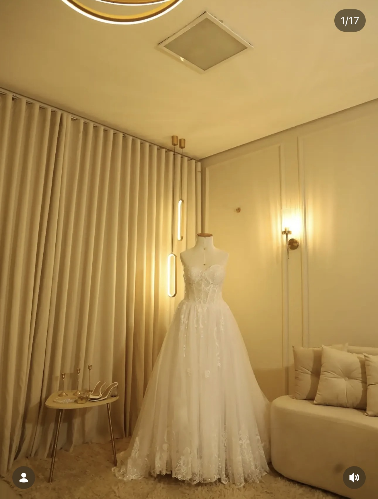

MAKE MARIA NOIVAS
O seu grande dia começa antes do altar.
Uma experiência completa de beleza para viver a preparação com calma, segurança e um resultado pensado para durar, emocionar e fotografar lindamente.
DO TESTE AO GRANDE DIA
Beleza que acompanha cada emoção.
Casamento tem choro, abraços, atrito, horas de duração, luzes diferentes e muitos registros. Por isso, a maquiagem de noiva é pensada de forma diferente da maquiagem convencional.
- Maquiagem de noiva
- Cabelo
- Teste uma semana antes
- Preparação para longa duração
- Atendimento personalizado

BASTIDORES
Um pouco da experiência.
Detalhes de preparação, textura, acabamento e aquele clima especial antes da cerimônia.


DEMAIS CONVIDADAS
Make + cabelo
R$320,00Madrinhas, mães e convidadas.
OPÇÃO CONVENCIONAL
Maquiagem
R$160,00Sem teste, com produtos e tempo de execução diferentes da maquiagem de noiva.
INSPIRAÇÕES
Para imaginar o seu grande dia.

O teste está incluso?
Sim. No atendimento de noiva de R$900,00, o teste é realizado uma semana antes.
Por que a maquiagem de noiva é diferente?
Porque o casamento envolve emoção, duração, abraços, atrito e muitos registros. A proposta específica considera esses fatores no planejamento da produção.
As convidadas também podem fazer make e cabelo?
Sim. O valor informado para demais convidadas é R$320,00 para make + cabelo.